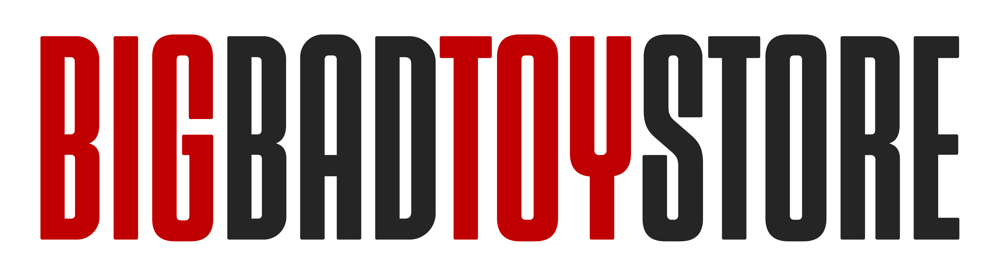
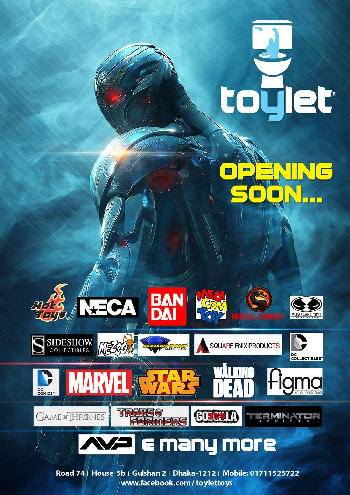

Exciting news for Bleach fans: McFarlane is now accepting preorders for the highly anticipated Ichigo Kurosaki and Yhwach figures.
These meticulously crafted figures capture the essence of the iconic Substitute Shinigami and the formidable leader of the Wandenreich,
complete with intricate details and dynamic poses.
Don't miss the chance to secure these exclusive additions to your collection before they sell out.
Preorder now at McFarlane Store and be among the first to own these must-have Bleach collectibles!

BigBadToyStore is an online retailer specializing in action figures, collectibles, and other pop culture merchandise.
They offer a wide range of products including figures from popular franchises such as Marvel, Star Wars, Transformers,
and anime series like Bleach, and Dragon Ball Z,One Piece.
The store features an extensive selection of items from different manufacturers and covers categories like action figures,
statues, model kits, and vinyl figures. They also provide frequent updates on upcoming releases and sales events,
making it a go-to destination for collectors (BigBadToyStore).
For more information or to browse their products, you can visit their website at BigBadToyStore

Located in Gulshan 2, Dhaka, Toylet is a top destination for action figure collectors in Bangladesh.
The store offers a wide range of authentic action figures from popular franchises like Marvel, DC, and various anime series.
Customers can find Marvel Legends, DC Comics Variants, Hot Toys, and many other high-quality figures. Toylet is known for its reliability,
ensuring all products are genuine, and even offers a pre-order service for upcoming releases.
The knowledgeable staff and well-organized store layout enhance the shopping experience, making Toylet a must-visit for any collector